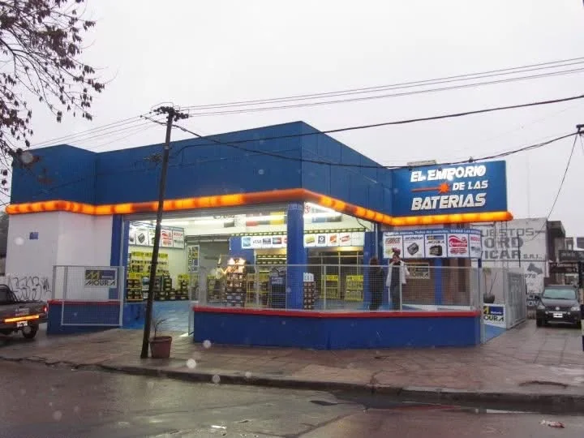

ESPECIALISTAS EN BATERÍAS
La batería que tu auto necesita.
Trabajamos con marcas reconocidas para autos y camionetas. Te ayudamos a encontrar la opción correcta para tu vehículo.
✓ Asesoramiento para elegir la batería adecuada

NUESTRO LOCALENCONTRÁ TU BATERÍA
¿Qué vehículo tenés?
Elegí la marca y el modelo para ver una referencia.
PRODUCTOS
Marcas que trabajamos
Baterías para distintos tipos de vehículos y necesidades.


EL EMPORIO DE LAS BATERÍAS
Un local dedicado a las baterías.
Atención directa y asesoramiento para encontrar una batería compatible con tu auto o camioneta.
Conocé el local →¿NECESITÁS ASESORAMIENTO?
Contanos qué auto tenés.
Con la marca, el modelo y el año podemos orientarte mejor.